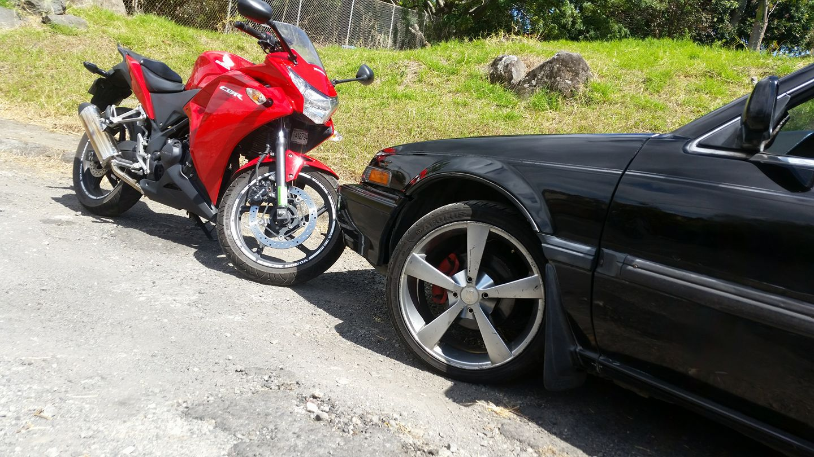
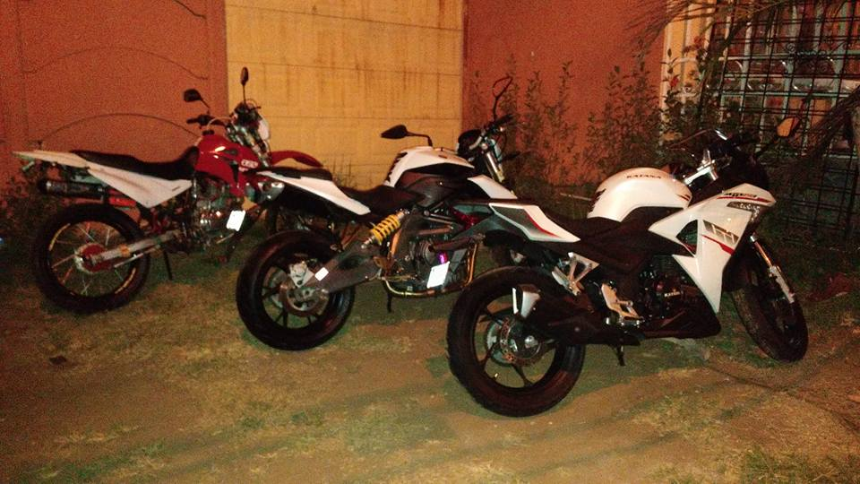
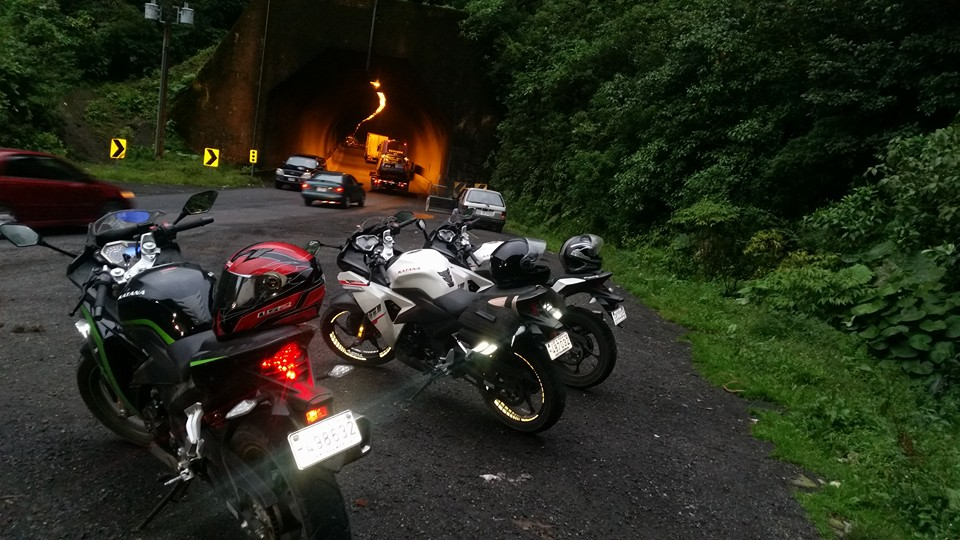
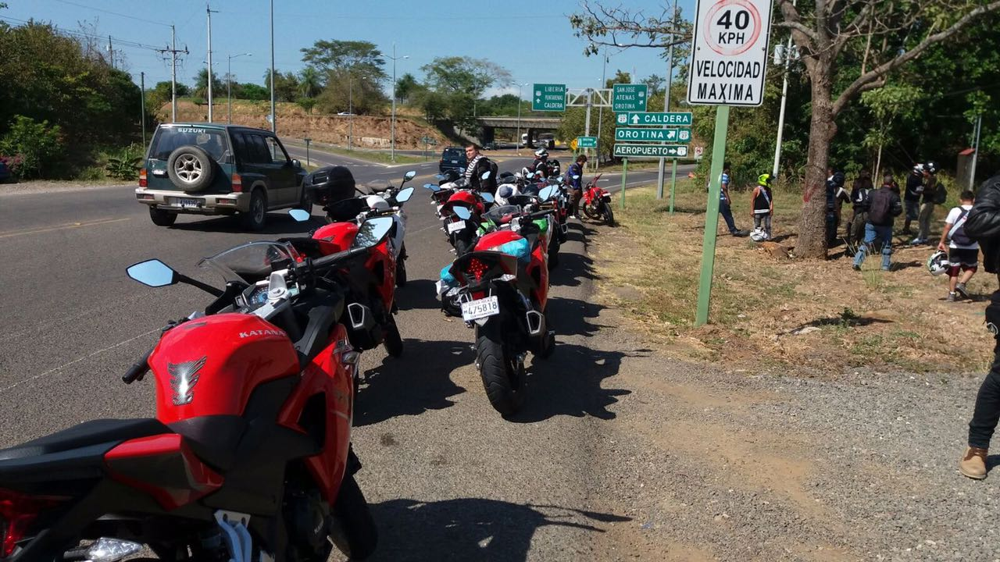
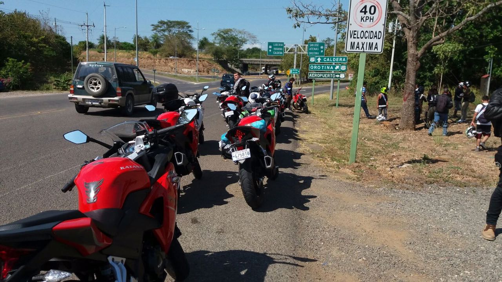
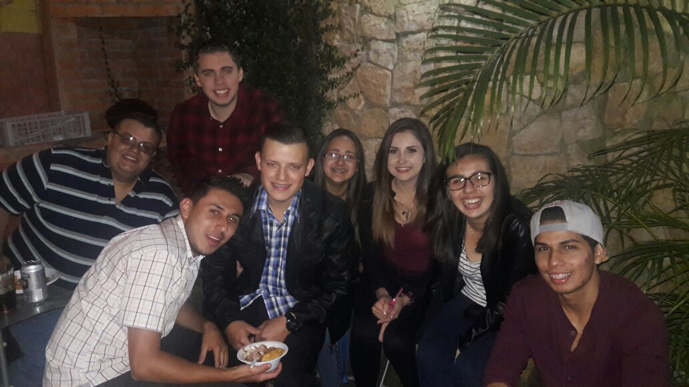
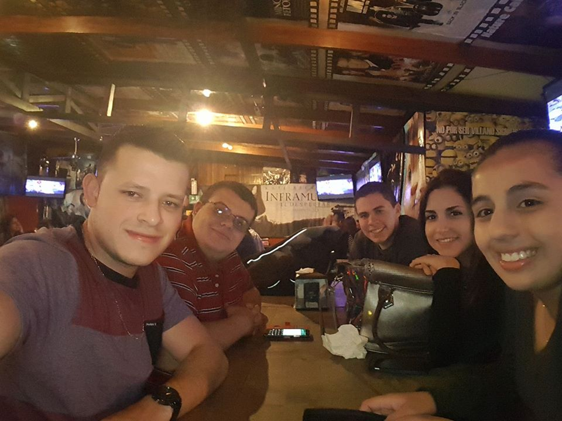
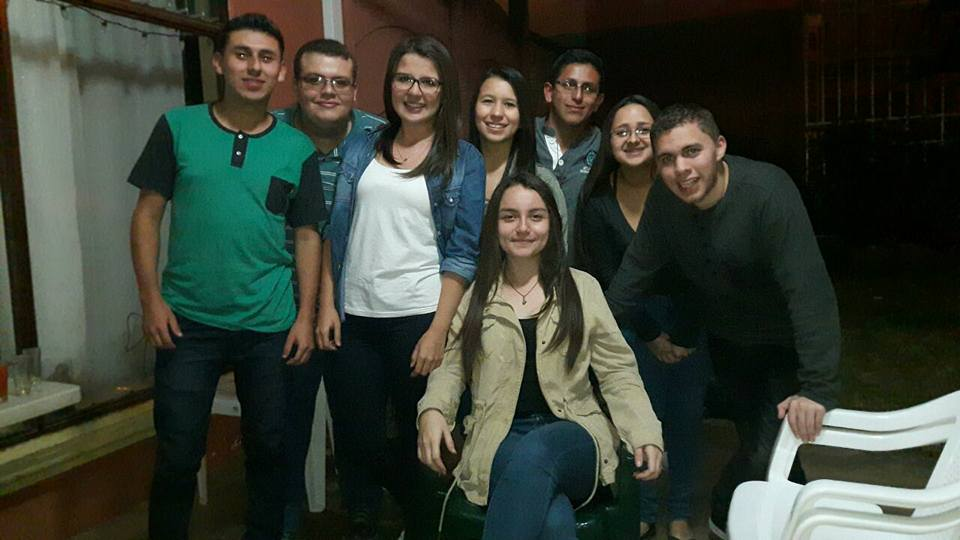

Pasatiempos
Uno de mis mayores pasatiempos es andar en mi motocicleta, salir a conocer Costa Rica con amigos y familia en mi moto es una de las mejores sensaciones, siempre manteniendo la precaución en carretera, respetando la ley (casi siempre), y usando el equipo de seguridad necesario.
  
 

Otro de mis pasatiempos preferidos es salir con mis amigos a vacilar, recordar viejos tiempos, y principalmente mantener esa amistad que es de las cosas más importantes en la vida.
  